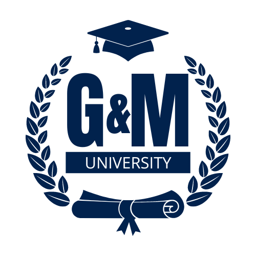

Styve Maba
Pointe-Noire, République du Congo
(+242) 06 515 23 74
kaiserstyve2@gmail.com
linkedin.com/in/kaiser-styve

À l’attention du jury d’admission Institut Supérieur PolytechniqueGiovani & Mamie University (GMU)
Pointe-Noire, République du Congo
Objet : Candidature à une admission en troisième année – Génie logiciel, filière Développement Full-Stack
Madame, Monsieur les membres du jury,
Développeur informatique professionnel depuis plusieurs années, je souhaite intégrer l’Institut Supérieur Polytechnique de Giovani & Mamie University, au sein de la formation en Génie logiciel, filière Développement Full-Stack. Cette candidature s’inscrit dans une démarche de reconversion académique vers un domaine dans lequel j’ai progressivement construit mon parcours professionnel et acquis une expérience significative.
Mon parcours universitaire a débuté à l’Université Marien Ngouabi, où j’ai validé quatre semestres en sciences économiques. Cette formation m’a permis d’acquérir des bases académiques en mathématiques, en statistiques et en anglais. J’y ai également suivi un enseignement d’Initiation à l’informatique, qui témoigne de mon premier contact académique avec cette discipline. Ces acquis constituent une partie de mon parcours et s’inscrivent dans la continuité de mon orientation professionnelle actuelle.
J’ai ensuite choisi de m’orienter vers l’informatique, un domaine qui correspond davantage à mes aptitudes, à mes centres d’intérêt et à mes ambitions. Ce choix s’est concrétisé par plusieurs années d’expérience dans le développement d’applications web et mobiles. Mes activités professionnelles m’ont notamment amené à intervenir dans l’analyse des besoins, la conception technique, le développement d’interfaces et de services applicatifs, la gestion de bases de données, la maintenance et la résolution de problèmes en production. J’ai également acquis de l’expérience dans le suivi et la conduite de projets informatiques.
Cette évolution m’a permis de développer des compétences pratiques et une compréhension globale du cycle de vie des applications. Elle m’a également convaincu de l’importance de consolider cette expérience par des connaissances théoriques et méthodologiques approfondies. Ma démarche ne consiste donc pas à découvrir un nouveau domaine professionnel, mais à structurer et à approfondir les compétences acquises par la pratique au moyen d’une formation spécialisée en génie logiciel.
Le choix de la filière Développement Full-Stack s’inscrit directement dans cette continuité. Je souhaite renforcer ma maîtrise des méthodes de conception et de développement logiciel, approfondir les fondements scientifiques de ma discipline et poursuivre mon évolution professionnelle sur des bases académiques solides. Par ailleurs, conscient de la place importante accordée à l’anglais dans votre approche pédagogique, je suis disposé à mobiliser les acquis développés durant mon parcours universitaire pour répondre aux exigences de la formation.
Au regard de mon parcours académique et de mon expérience professionnelle, je sollicite l’examen de mon dossier en vue d’une admission en troisième année. Je souhaite que le jury puisse apprécier l’ensemble de mes acquis, à travers mes relevés de notes, mon expérience professionnelle et les responsabilités exercées. Je reste également disposé à satisfaire à toute évaluation complémentaire que votre établissement jugerait nécessaire.
Intégrer votre établissement représenterait une étape importante dans mon projet : consolider mon expérience par une formation diplômante en adéquation avec mon domaine d’activité et poursuivre mon évolution dans la conception et le développement de solutions logicielles.
Sérieux, autonome et engagé dans une démarche d’apprentissage continu, je suis prêt à m’investir pleinement dans cette formation et à répondre aux exigences académiques de votre établissement.
Je vous remercie de l’attention portée à ma candidature et vous prie d’agréer, Madame, Monsieur les membres du jury, l’expression de ma considération distinguée.